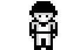
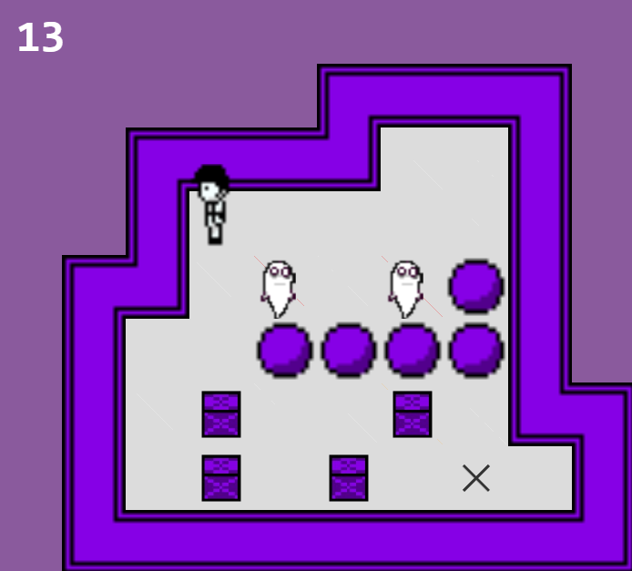
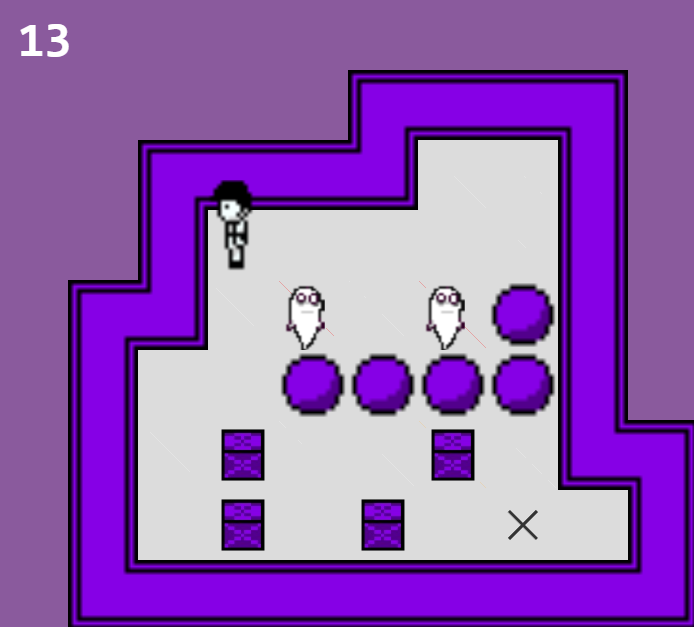
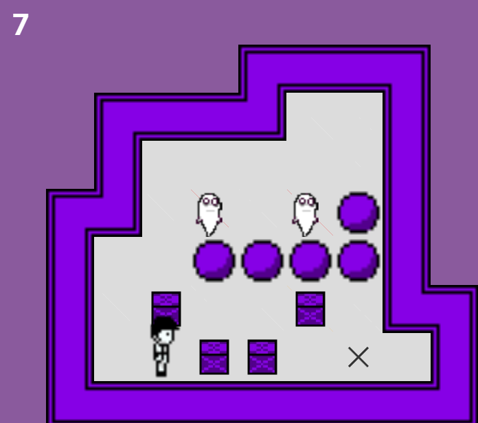
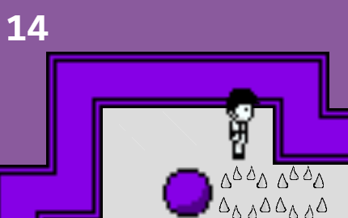
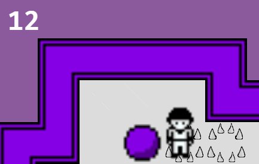
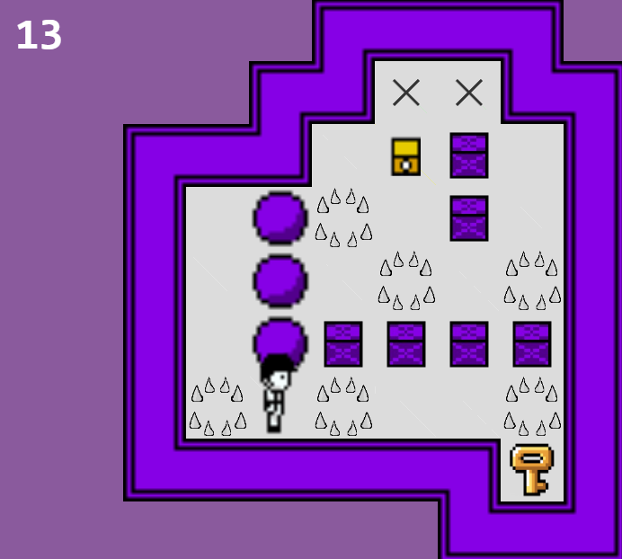
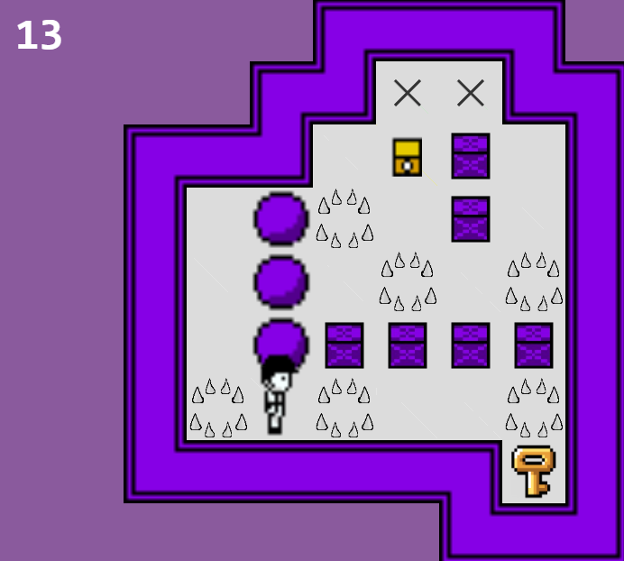
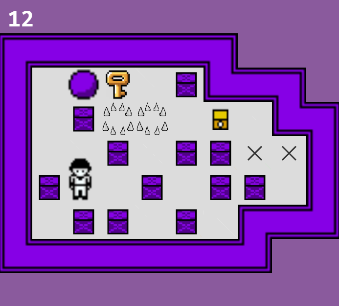
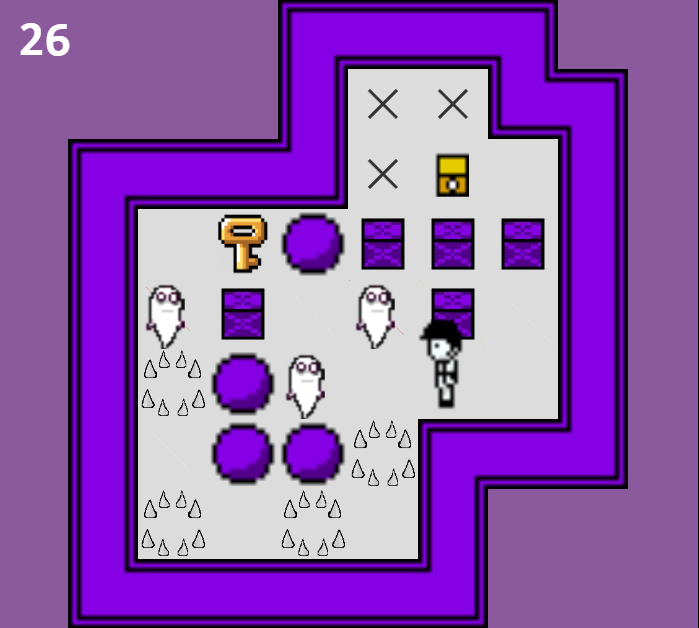

Aviso. Este é um projeto não oficial, leia mais sobre no fim da página.
DAY OFF é um jogo sokoban desenvolvido por um aluno da FEI, inspirado pelo jogo OFF (2008) criado por Mortis Ghost.
DAY OFF
Tenho uma missão sagrada a cumprir. Devo purificar o mundo.
O mundo é um lugar cheio de injustiças, maldade, pecados e impurezas que emergem das profundezas da mente humana, corroendo o mundo e acabando com ele pouco a pouco. É nesse momento que o mundo precisa de um salvador para purificar o mal. O Batedor, a personificação da purificação que trará pureza ao mundo eliminando a maldade. Para cumprir sua missão ele precisa purificar o mundo dos Espectros, almas malignas que corroem o mundo.
Durante sua missão de purificação, o Batedor ficou cansado de purificar tantos Espectros em um dia só. Então ele decidiu descansar em uma mina abandonada. Porém, ele não esperava que a mina estivesse assombrada por Espectros. Para que o Batedor consiga escapar vivo, ele vai precisar da sua ajuda. Guie o Batedor até o fim de cada fase para que ele possa escapar e continuar sua missão sagrada.
Antes de começarmos…
Não pode haver mais leitores nesta página do que eu, então devo presumir que você não passa de um fragmento da minha imaginação. De qualquer forma, apresento-me: sou o Juiz, guardião da Zona 0 e protetor desta página. Mesmo que você seja apenas uma ilusão aos meus olhos, sinto-me na obrigação de explicar algumas seções para facilitar sua gameplay. Farei um breve resumo do que você deve saber antes de ir ao seu destino.
GAMEPLAY
"Encarnação ectoplasmática misteriosa."
Essas almas corrompidas vagam pelas zonas, consumindo tudo o que tocam. Sua presença distorce o mundo e desafia o Batedor em sua missão de purificação.
Em sua jornada, o Batedor encontrará Espectros. Elimine-os sem distinção para liberar seu caminho. Para eliminar um Espectro, basta empurrar ele até uma parede ou uma pedra.
 

Haverá caixas impedindo seu progresso. Basta empurrar elas para abrir um caminho. Mas tome cuidado, o Batedor só pode andar um determinado número de passos que varia por fase.
Como podemos perceber, em vez de perder apenas 1 passo o Batedor perde 2 passos. Isso ocorre porque ele andou por cima de uma armadilha. Mas não se preocupe, ele não vai morrer ao pisar em armadilha.
 Entretanto...
Existe essa armadilha especial que desaparece por um segundo. Se você ficar em cima dela você vai perder passos constantemente toda vez que ela aparecer novamente. O lado bom é que você não vai perder 2 passos se você passar por cima dela quando os espinhos desaparecem.
 

Para progredir em algumas fases, você precisará pegar uma chave para destrancar a fechadura. Porém, haverá uma fase onde você não precisa pegar a chave para chegar ao fim.
Como podemos ver, dependendo da fase você precisará guiar o Batedor para desviar de armadilhas, pegar uma chave para abrir uma fechadura e empurrar Espectros ou caixas.
FIM DO TUTORIAL
Agora que você sabe tudo sobre o jogo, resta apenas guiar o Batedor até o fim para que ele possa escapar. Boa sorte!
Aviso de não oficialidade e uso de material
Este jogo não é oficial e não foi criado para fins comerciais ou lucrativos. Não obtenho lucro algum com este projeto. OFF foi criado por Mortis Ghost. Os sprites e demais recursos são de uso autorizado apenas para fins pessoais e não comerciais, respeitando os direitos autorais conforme a Lei nº 9.610/1998 (Lei de Direitos Autorais). O uso do material foi referenciado com os devidos créditos e link para o criador oficial na página de referências. Qualquer uso comercial ou distribuição sem autorização prévia do detentor dos direitos é proibido.